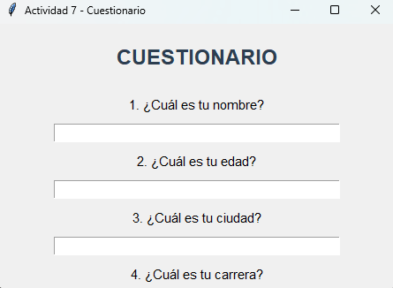
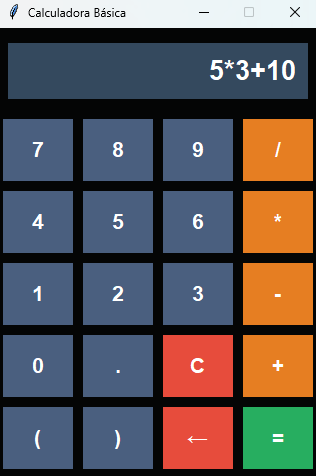

Python Tkinter
Prácticas de Interfaz Gráfica de Usuario (GUI) desarrollados en Python utilizando la biblioteca nativa Tkinter
📖 Descripción General
Este proyecto contiene una colección de 14 prácticas educativas desarrolladas con Tkinter, la biblioteca nativa de Python para crear Interfaces Gráficas de Usuario (GUI). Estas prácticas cubren los siguientes conceptos fundamentales de Tkinter:
- Creación y configuración de ventanas (Tk())
- Widgets básicos: Label, Button, Entry, Listbox, Canvas
- Gestores de geometría: pack(), grid(), place()
- Manejo de eventos con command y bind()
- Organización con frame y marcos anidados
- Validación de entrada de datos
- Uso de temporizadores con after()
- Mensajes emergentes con Messagebox
- Personalización avanzada (colores, fuentes, estilos)
✨ Características Principales
🎯 Widgets
Uso de botones, labels, listbox, entries y más elementos nativos de Tkinter
⚡ Layouts & Grid
Organización de interfaces usando el sistema de grid y frames para estructurar ventanas
🚀 Interactividad
Manejo de eventos, acciones de usuario y respuestas dinámicas dentro de las ventanas
💡 Diseño de Interfaz
Principios de UX/UI aplicados a ventanas de escritorio con estilos y configuraciones visuales
🚀 Cómo Usar
Instalación
git clone https://github.com/TheNarratorVIMMXX/PythonTkinter.git
cd PythonTkinter
python P1.py
Uso Básico
Cada práctica es un script independiente, para ejecutar cualquiera:
- Asegúrate de tener
Python 3.11instalado en tu sistema - Tkinter viene incluido con Python, no necesitas instalar dependencias extra
- Navega a la carpeta del proyecto y ejecuta la práctica deseada
- Se abrirá una ventana gráfica con la interfaz de esa práctica
- Cierra la ventana para terminar la ejecución
📸 Capturas de Pantalla

P7 - Cuestionario

P13 - Semáforo

P14 - Calculadora
🛠️ Tecnologías Utilizadas
- Python 3.11 - Lenguaje de Programación
- Tkinter - Biblioteca para crear Interfaces Gráficas de Usuario (GUI)
- Visual Studio Code - Entorno de Desarrollo (IDE)
📄 Licencia
Este proyecto está bajo la Licencia MIT. Consulta el archivo LICENSE para más detalles.
📧 Contacto
Si tienes preguntas o sugerencias sobre este proyecto, contáctame:
- GitHub: @TheNarratorVIMMXX
- Email: cgmagallanes23@gmail.com
- LinkedIn: Carlos Gabriel Magallanes López